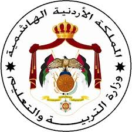
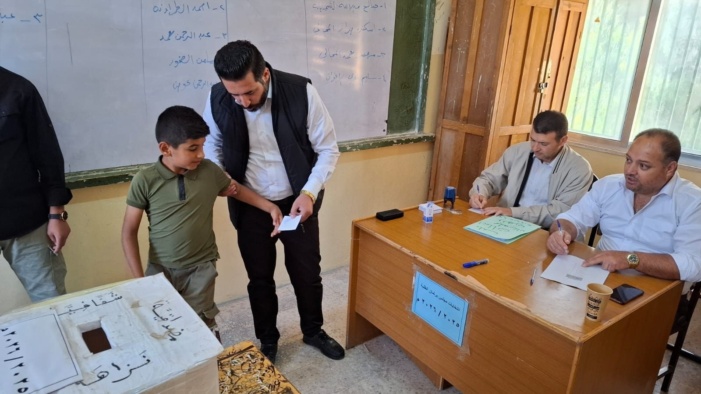
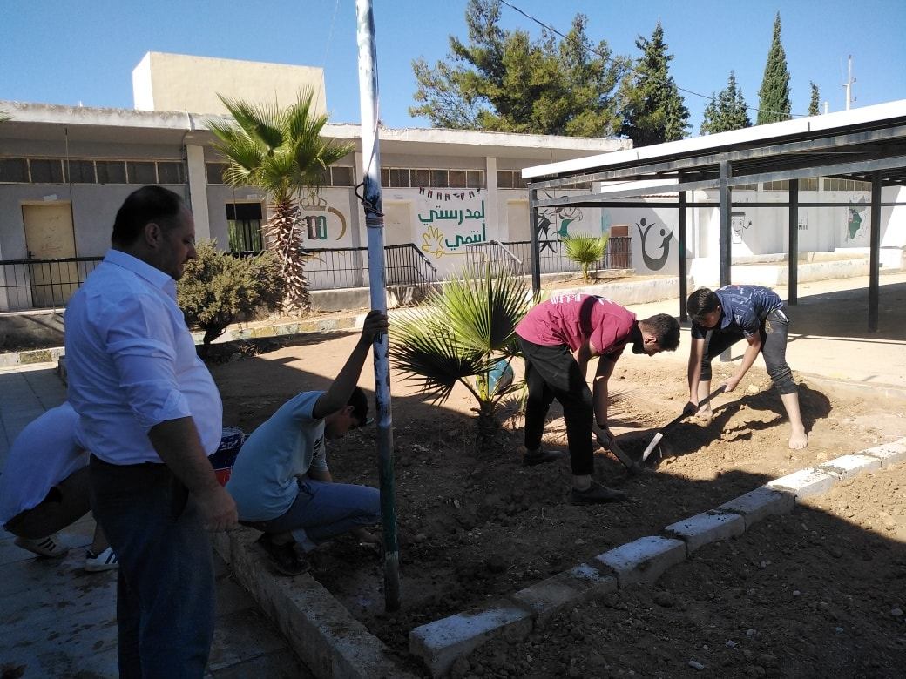

مرحبا بكم في موقع مدرسة مرود الثانوية للبنين
الاقسام:
=>عن المدرسة
=>الصفوف والمناهج
=>الأنشطة والفعاليات
=>التعليم الدامج
=>تواصل معنا
عن المدرسة
.مدرسة مرود الثانوية للبنين هي مدرسة حكومية تاسست عام 2005 و تقدم التعليم للمرحلتين الأساسية العليا والثانوية. تقع في منطقة مرود وتخدم أبناء المجتمع المحلي، وتهدف إلى توفير تعليم جيد يساعد الطلبة على تحقيق النجاح الأكاديمي وتنمية شخصيتهم. تضم المدرسة مجموعة من المعلمين المؤهلين الذين يعملون على غرس القيم الإيجابية وتشجيع الطلاب على الاجتهاد والمشاركة في الأنشطة المدرسية المختلفة.
كما تهتم المدرسة بتطوير بيئتها التعليمية من خلال استخدام الوسائل الحديثة في التدريس وتوفير المرافق اللازمة لدعم العملية التعليمية. وتحرص على تنظيم فعاليات تربوية وثقافية ورياضية تسهم في تنمية مهارات الطلاب وصقل مواهبهم.
وتسعى إدارة مدرسة مرود الثانوية للبنين إلى بناء علاقة تعاون وشراكة مع أولياء الأمور والمجتمع المحلي، بهدف توفير أفضل الظروف التعليمية والتربوية للطلبة، ليكونوا قادرين على مواصلة دراستهم والمشاركة الفاعلة في خدمة وطنهم ومجتمعهم.
الصفوف والمناهج
تستقبل مدرسة مرود الثانوية للبنين الطلاب ابتداءً من الصف الرابع وحتى الصف الثاني عشر، وتحرص على تقديم تعليم متكامل يوازن بين الجانب الأكاديمي والتربوي. تتبع المدرسة المنهاج الرسمي للدولة، ويشمل المواد الأساسية: اللغة العربية، اللغة الإنجليزية، الرياضيات، العلوم، الدراسات الاجتماعية، والتربية الإسلامية، مع توفير أنشطة تعليمية إضافية لتعزيز مهارات الطلاب.
تركز المدرسة على دمج الجانب النظري مع التطبيق العملي في جميع المواد، وذلك من خلال مختبرات علمية مجهزة، قاعات حاسوب، وورش عمل عملية تساعد الطلاب على فهم الدروس بعمق. كما تقدم المدرسة برامج وأنشطة إضافية لتطوير المواهب الفنية والرياضية، وتشجع الطلاب على المشاركة في المسابقات العلمية والثقافية.
تسعى المدرسة أيضًا إلى متابعة تقدم الطلاب بشكل فردي، وتقديم الدعم الأكاديمي والتربوي عند الحاجة، مع تعزيز روح التعاون والانضباط والمسؤولية، ليتمكن كل طالب من تطوير قدراته وتحقيق أفضل النتائج على الصعيدين الدراسي والشخصي.
الأنشطة والفعاليات
تركز المدرسة على جميع انواع الانشطة مثل :
1- الأنشطة التطوعية في المجتمع المحلي
تشارك مدرسة مرود الثانوية للبنين في خدمة المجتمع من خلال الأنشطة التطوعية، مثل حملات النظافة في الأحياء العامة وتشجيع الطلاب على المشاركة في المبادرات المحلية. تهدف هذه الأنشطة إلى غرس روح المسؤولية لدى الطلاب وتعزيز وعيهم بأهمية المحافظة على البيئة والمجتمع.

2- المبادرات المتعلقة بالمخاطر والسلامة العامة
تعمل المدرسة على توعية الطلاب بالمخاطر المحتملة في حياتهم اليومية وكيفية التعامل معها، من خلال برامج وحملات توعية حول السلامة العامة. وتشمل هذه المبادرات التدريب على إطفاء الحرائق، الإسعافات الأولية، والتصرف السليم في الحالات الطارئة.

3- برنامج المسعف الصغير
تهدف مدرسة مرود الثانوية إلى تعليم الطلاب مهارات الإسعافات الأولية الأساسية من خلال برنامج “المسعف الصغير”، بحيث يكون كل طالب قادرًا على تقديم المساعدة في الحالات الطارئة حتى وصول الطواقم الطبية المتخصصة.

4- الأنشطة الرياضية
تولي المدرسة اهتمامًا كبيرًا بالأنشطة الرياضية، حيث توفر ملاعب ومرافق مناسبة لممارسة كرة القدم، كرة السلة، ألعاب القوى، وغيرها من الرياضات. كما تشجع المدرسة الطلاب على المشاركة في البطولات الداخلية والخارجية، لتعزيز اللياقة البدنية وروح المنافسة الشريفة.

5- انتخابات المجالس الطلابية
تشجع المدرسة الطلاب على المشاركة في الانتخابات الطلابية لاختيار أعضاء المجالس المدرسية، بما يعزز لديهم مهارات القيادة، المشاركة المجتمعية، واتخاذ القرارات.

6- أعمال الصيانة والخدمات المدرسية
يشارك الطلاب في بعض أعمال الصيانة البسيطة داخل المدرسة، مثل ترتيب الصفوف أو الاعتناء بالحدائق، بهدف غرس قيم العمل الجماعي والمسؤولية تجاه بيئتهم التعليمية.

التعليم الدامج
تسعى مدرسة مرود الثانوية للبنين إلى تطبيق مفهوم التعليم الدامج لضمان دمج جميع الطلاب، بما في ذلك ذوي الاحتياجات الخاصة، في العملية التعليمية بشكل كامل وفعّال. يهدف هذا النوع من التعليم إلى توفير بيئة مدرسية شاملة تتيح لكل طالب التعلم والتفاعل مع زملائه دون تمييز، مع تقديم الدعم الأكاديمي والنفسي المناسب لكل حالة.
تُقدّم المدرسة برامج وأنشطة مصممة خصيصًا لتلبية احتياجات الطلاب المختلفة، بما في ذلك أساليب تعليمية مرنة، أدوات مساعدة، وحصص تفاعلية تحفز المشاركة والتعاون بين جميع الطلاب. كما يعمل المعلمون على متابعة تقدم الطلاب بشكل فردي لضمان استفادتهم الكاملة من المواد الدراسية وتحقيق النجاح الأكاديمي والشخصي.


تواصل معنا
فيسبوك يمكن التواصل مع المدرسة عبر الصفحة الرسمية عبر منصة
credits : Shadi Yahya AL-Majali